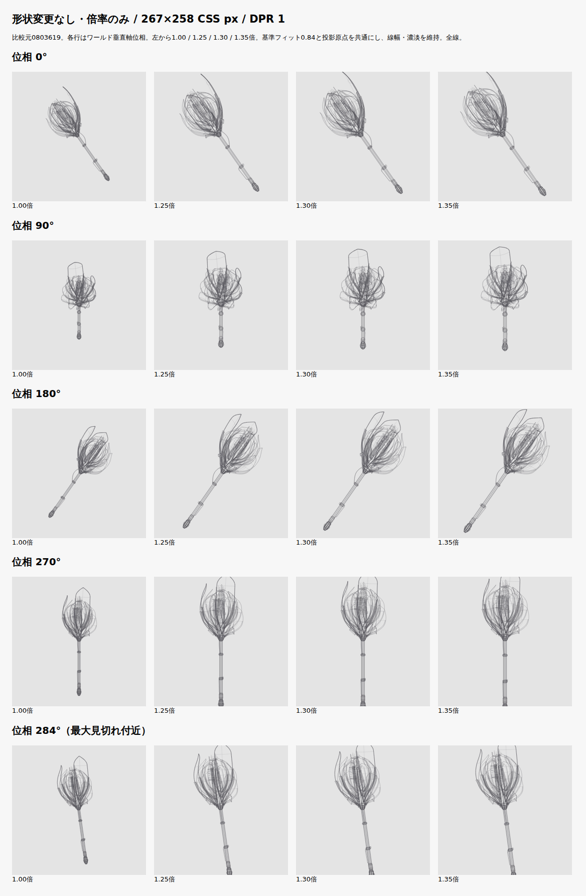
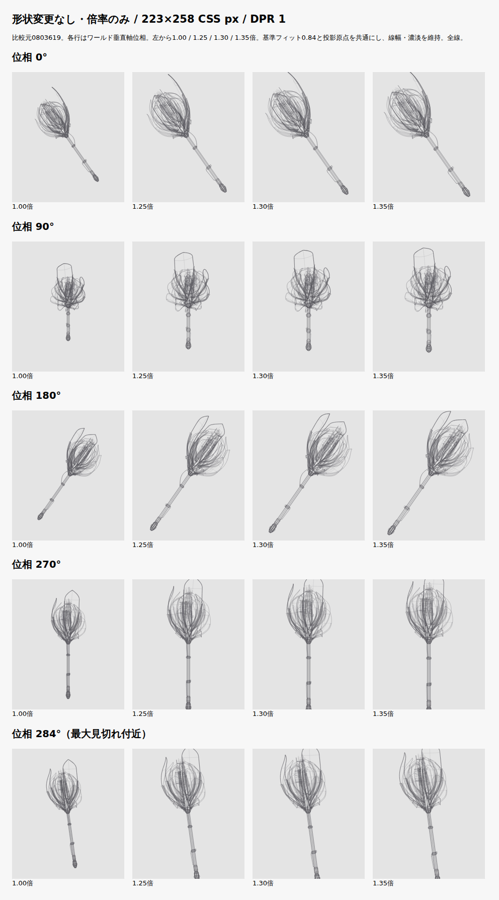
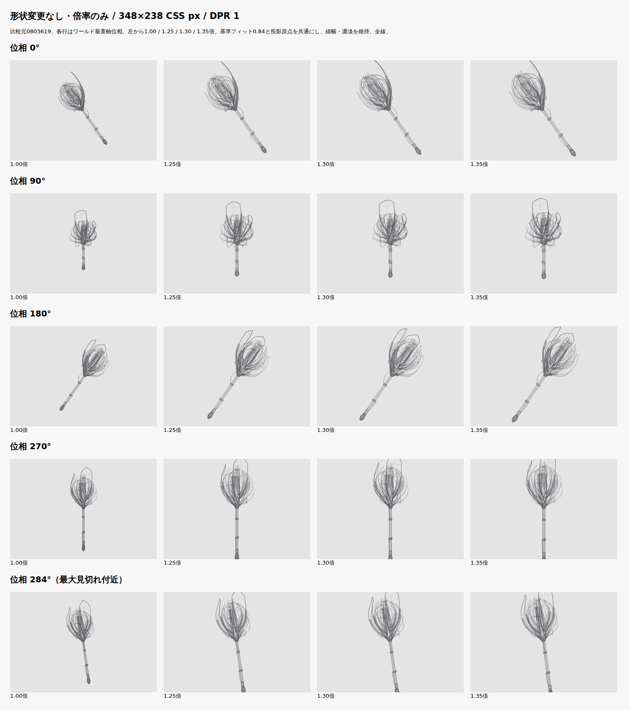
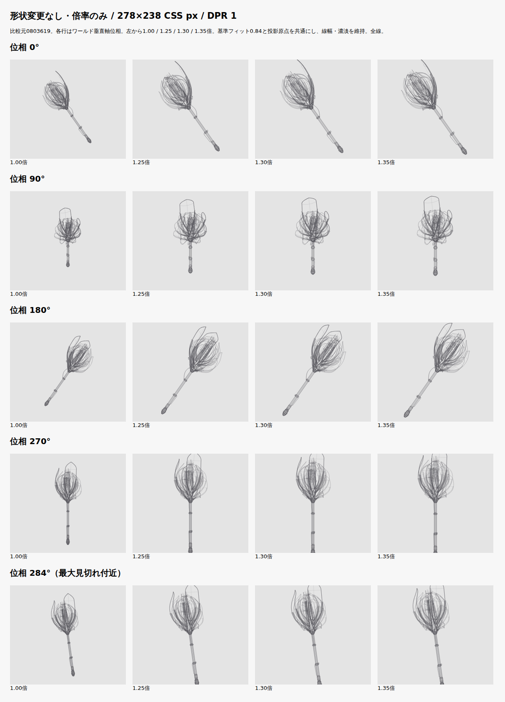
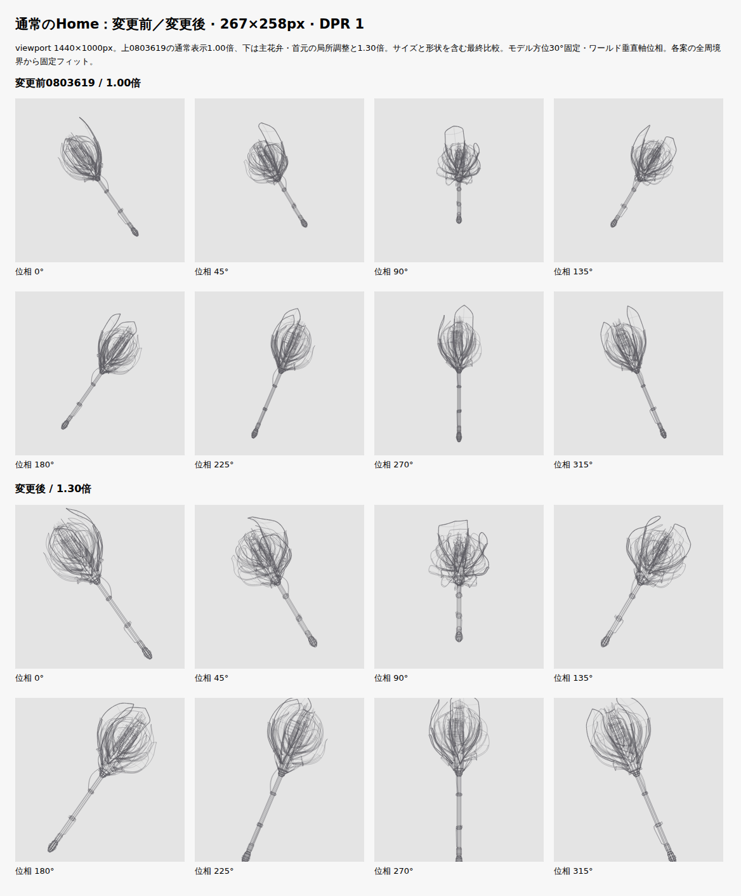
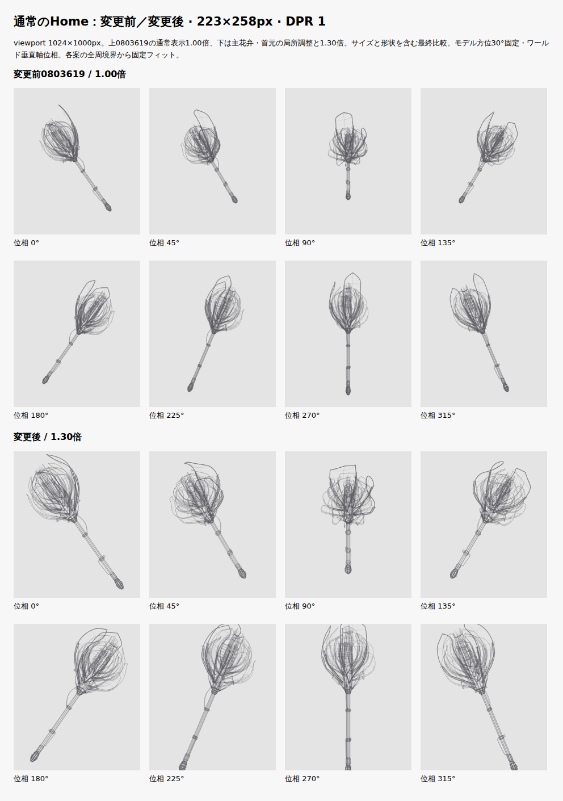
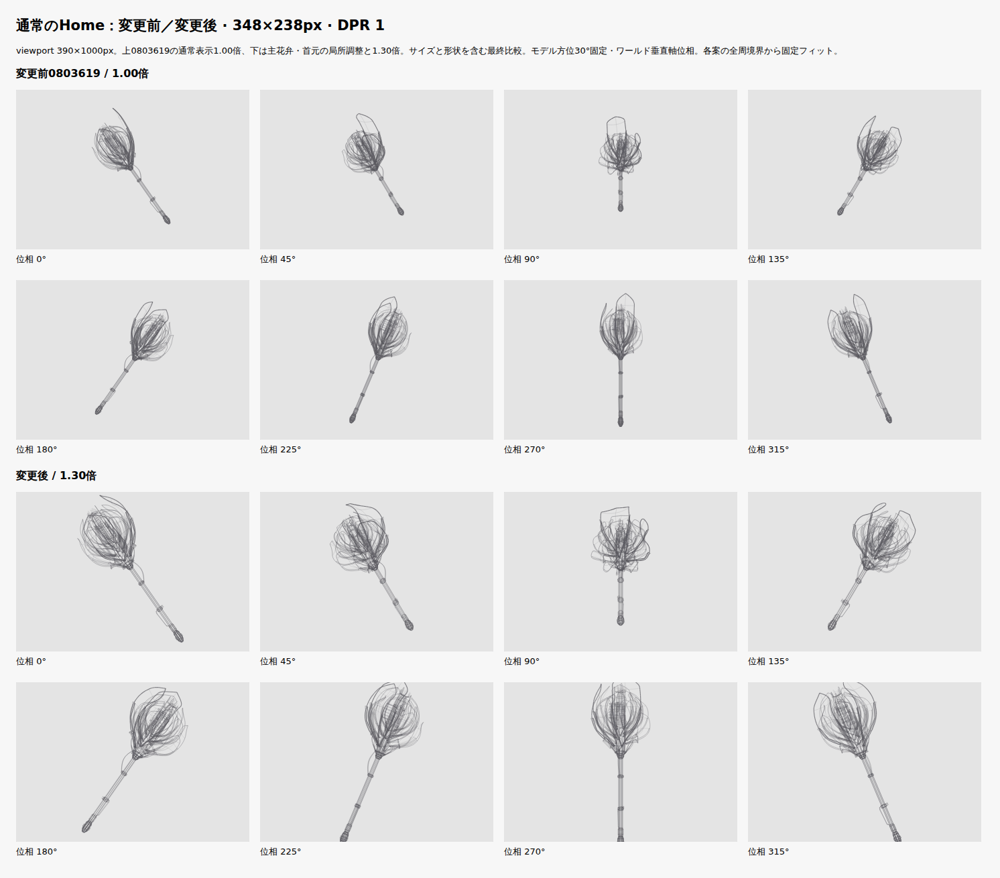
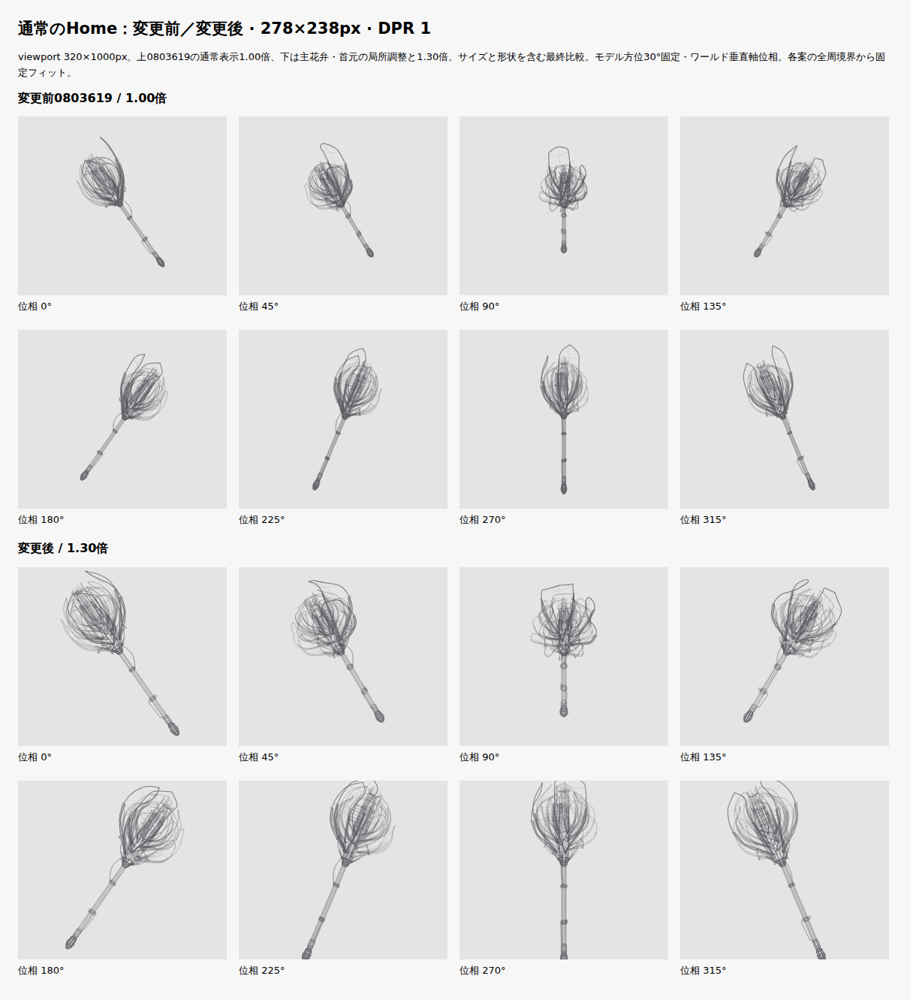
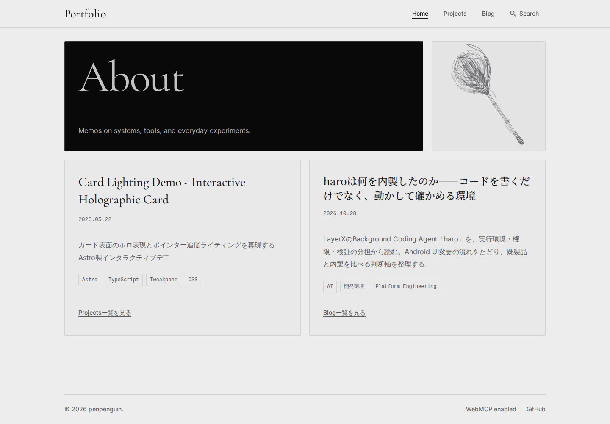
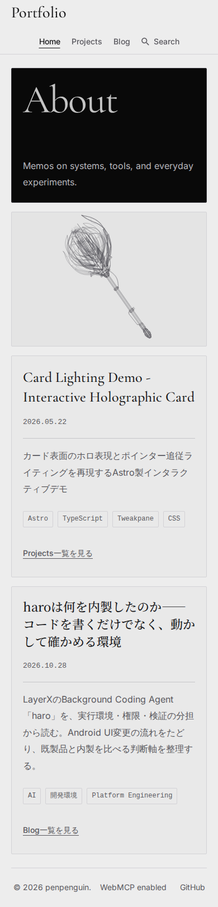

比較元はPR #170の0803619。実装 c0114896bf4ffb5fc8a4ab5fa93389131ca024a1。c973d28や以前の二枚杖を変更元にはしていません。まず形状を変えず4倍率を比較し、その後主花弁と首元だけを局所調整しました。表示枠・背景・操作面の寸法は維持しています。
1.00／1.25／1.30／1.35倍を、同じ形状・描線・カメラ・基準投影原点で比較。共通1.30倍、追加位置オフセット0を採用しました。1.25倍より花冠の存在感が増し、1.35倍ほど中心機構の余白を詰めません。0.84は基準フィットとして残し、座標の縮尺だけへ倍率を一度適用しています。
連続サイズ比較HTML（Rawを保存してローカルで開く）。位相0／90／180／270°と最大見切れ付近284°を静止比較。各パネルはCSS実寸です。画像を開くと原寸で確認できます。




外6・中8・内5の19枚を維持。主花弁の尖端は4.9→4.65、4.5→4.4へ短縮し、腹幅は1.42→1.62、1.36→1.54へ広げました。最長の先端半径を1.48→0.9へ戻し、中層の隣接2枚を4.18／4.25へ段階的につないでいます。突出した空洞の縁より、花冠へ重なる腹で主役を作ります。
外層の取付をy=0.70〜1.15、中層1.26〜1.62、内層1.78〜2.0へ分散。萼の根元を既存スリーブの0.26／0.36／0.5へ分け、低い柄の接点への集中を解消しました。接続と19枚の密度を保ち、リングや部品を追加していません。柄・石突き・冷却・配線は幾何形状のハッシュも変更前と一致します。
一周の造形比較HTML。両案1.30倍で、変更前の縮尺・原点を共有する表示と各モデルの通常固定フィットを切り替えられます。主要構造切替もレビュー専用で、本番にUIは追加していません。

造形比較・両案1.30倍（各案の通常固定フィット） ／ 造形比較・同じ縮尺と投影原点 ／ 主要構造／全線 ／ 変更後8方向 DPR 2

造形比較・両案1.30倍（各案の通常固定フィット） ／ 造形比較・同じ縮尺と投影原点 ／ 主要構造／全線 ／ 変更後8方向 DPR 2

造形比較・両案1.30倍（各案の通常固定フィット） ／ 造形比較・同じ縮尺と投影原点 ／ 主要構造／全線 ／ 変更後8方向 DPR 2

造形比較・両案1.30倍（各案の通常固定フィット） ／ 造形比較・同じ縮尺と投影原点 ／ 主要構造／全線 ／ 変更後8方向 DPR 2
角度ラベルは初期モデル方位30°固定・ワールド垂直Y軸位相です。固定カメラ、初期左35°、原点を通るワールドY軸、16秒／周を維持。全周境界から基準フィットを一度求め、同じ枠では縮尺と原点を固定。形状調整後は全周境界を再計算したため、通常フィットの数値は変わります。手動のオフセット・角度連動補正はありません。
| 267×258px | 変更前1.00 | 変更前1.30 | 変更後1.30 |
|---|---|---|---|
| 固定縮尺 CSS px/モデル単位 | 21.591 | 28.068 | 29.19 |
| 投影原点 X / Y | 133.5 / 131.521 | 133.5 / 131.521 | 133.5 / 127.311 |
線幅は1.1／0.8／0.5 CSS px、濃淡範囲も維持。SVGは全周境界の縦横比に基づくviewBoxとnon-scaling-strokeを使い、Canvasと同じ固定画角へ一致させました。パネル外への線漏れと横はみ出しはブラウザーテストで検証しています。
| 実描画枠 | 保護部位の最小余白 | 最大見切れ | 全体が見える位相数 | 石突き全体が見える位相数 |
|---|---|---|---|---|
| 267×258 | 0.871px | 12.324px | 225 / 360 | 245 / 360 |
| 223×258 | 0.871px | 12.324px | 225 / 360 | 245 / 360 |
| 348×238 | 0.804px | 11.364px | 225 / 360 | 245 / 360 |
| 278×238 | 0.804px | 11.364px | 225 / 360 | 245 / 360 |
0〜359°を1°刻みで集計。保護点は中心機構・花弁の腹・取付・重要支持・首元・上側の柄から実際の共有頂点を取得し、最大線幅を含めて評価。最小余白は中心機構の上端を含む値です。全線の15px余白保証は今回廃止し、尖端・石突きの一時的な見切れを許可しています。数値検証に加え、実寸8方向と一周動作資料で見え方を確認しています。
viewport高さ1000pxで撮影。以下の描画枠は実測値で、viewport幅ではありません。DPR 1／2でパネルの位置・寸法は変更前後で一致しています。
| viewport | 描画枠 | 変更前 | 変更後 |
|---|---|---|---|
| 1440px | 267×258px | DPR 1 | DPR 1 ／ DPR 2 |
| 1024px | 223×258px | DPR 1 | DPR 1 ／ DPR 2 |
| 980px | 914×238px | DPR 1 | DPR 1 ／ DPR 2 |
| 768px | 726×238px | DPR 1 | DPR 1 ／ DPR 2 |
| 390px | 348×238px | DPR 1 | DPR 1 ／ DPR 2 |
| 320px | 278×238px | DPR 1 | DPR 1 ／ DPR 2 |


6.18.54.1-microsoft-standard-WSL2 / AMD Ryzen 5 3600 6-Core Processor / Chromium 156.0.8078.4 / Node v26.12.1。各条件60実描画のウォームアップ後480実描画。clearRect開始〜最終strokeまでの投影＋描線CPU時間を測定し、スキップしたrAFを混ぜていません。GPU合成を含むフレーム時間ではありません。
| 条件 | 中央値 前→後 | p95 前→後 |
|---|---|---|
| 267×258 / DPR 1 | 1.2 → 1.2ms | 1.8 → 2ms |
| 348×238 / DPR 2 | 1.3 → 1.3ms | 2.1 → 1.9ms |
測定環境ではp95 8ms目安以内。全端末保証ではありません。線分4,874→4,874、共有頂点4,154→4,154で増加なし。全長9.9→9.65、花冠長4.427→4.15、最大径3.539→3.771。曲線分割は増やさず、実寸近似誤差の最大は0.1 CSS pxでした。
| サイズ | 変更前 | 変更後 |
|---|---|---|
| Home HTML raw | 888,420 B | 861,206 B |
| Home HTML gzip | 78,536 B | 70,748 B |
| 静止SVG raw | 878,186 B | 850,972 B |
| 静止SVG gzip | 73,932 B | 66,298 B |
SVGの同形状・同線数を維持しつつ、viewBox内の座標が短い数値になったことで配信量は減少しました。
check（97ファイル、エラー・警告・ヒント0）、lint、全unit（53ファイル357件）、build＋Pagefind、ブラウザー96件が成功。今回のブラウザー全実行は初回で全件成功です。TDDで倍率・保護点・SVG・主花弁・根元接続の失敗を確認してから実装しました。回転・停止／再開・Enter／Space・フォーカス・タップ・Astro往復・動き軽減・非表示通知・後始末・検索・JS無効／Canvas失敗・既存Bento／アーカイブ／サムネイルを回帰確認しています。
Firefox／Safari・実機タッチ・実OSタブ切替・Windows runnerは未検証。タッチはChromiumエミュレーション、タブ非表示は合成通知とunitで検証。マージ・公開は行っていません。
4倍率の全周見切れ量 ／ 実行コマンド・TDD・変更ファイル ／ 全周数値・部品ハッシュ・ソースSHA256 ／ 実previewと比較描画の照合 ／ 変更前の480実測サンプル ／ 変更後の480実測サンプル ／ サイズ比較の連続動作 ／ 造形比較の連続動作 ／ 資料整合性